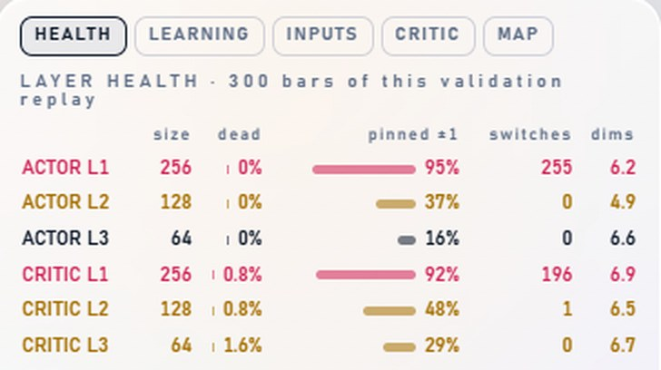
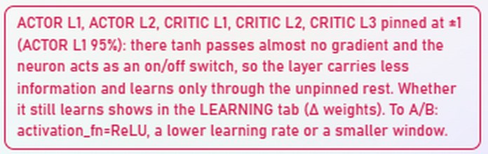
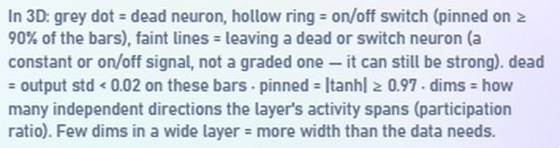
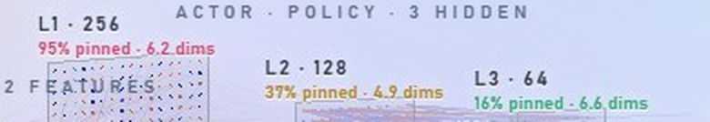
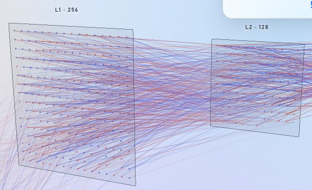
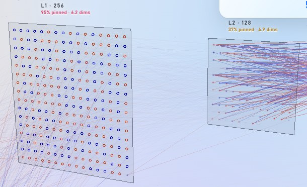
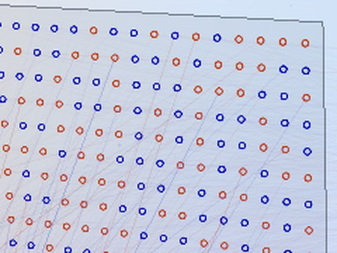
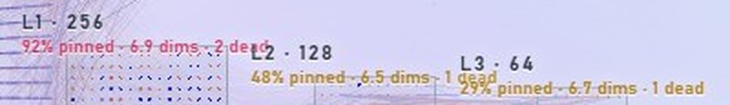
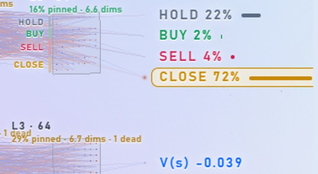

อ่านแท็บ HEALTH จากภาพจริง
ภาพข้างล่างคือหน้าจอจริงของโมเดล rl_prod_v1 ที่ eval รอบที่ 16 (step 160,000) วัดบน 300 แท่งของช่วง validation (USDJPY H4, 2025-08-22 → 2025-10-31) แต่ละหมายเลขอธิบายด้านล่างว่าบอกอะไร และถ้าเจอค่าแบบนี้ควรทำอะไรต่อ
ภาพรวมหน้าจอ
ต้องรู้ก่อน 2 อย่าง
สมองมีสองส่วน
Actor (ด้านบน) คือส่วนที่ตัดสินใจว่าจะ HOLD / BUY / SELL / CLOSE ส่วน Critic (ด้านล่าง) ประเมินว่าสถานการณ์ตอนนี้ดีหรือแย่ แต่ละส่วนมี 3 ชั้น ชั้นละ 256 → 128 → 64 นิวรอน
นิวรอนแต่ละตัวให้ค่าระหว่าง −1 ถึง +1
โมเดลนี้ใช้ฟังก์ชัน tanh ซึ่งบีบผลรวมของอินพุตให้อยู่ในช่วง −1 ถึง +1 ค่าตรงกลางไล่ระดับได้ละเอียด แต่ถ้าผลรวมใหญ่มาก ค่าจะไปติดที่ขอบ −1 หรือ +1 และขยับต่อไม่ได้อีก เรียกว่า pinned (ติดขอบ)
1 แท็บ

แผงนี้แสดงทีละแท็บ เลือกได้จากแถวปุ่มนี้หรือเมนู insight ด้านล่างจอ หน้านี้อธิบายเฉพาะแท็บ HEALTH ซึ่งตอบคำถามว่า "แต่ละชั้นของสมองทำงานเต็มที่ไหม"
บรรทัดถัดมา LAYER HEALTH · 300 bars of this validation replay บอกว่าตัวเลขทั้งหมดวัดจาก 300 แท่งที่โมเดลเล่นในช่วง validation ของ snapshot นี้ ถ้าเปลี่ยน eval หรือเปลี่ยน source ตัวเลขจะคำนวณใหม่
2 ตารางสุขภาพแต่ละชั้น
หนึ่งแถว = หนึ่งชั้น สีของชื่อชั้นคือผลประเมิน: แดง มีปัญหาหนัก, ทอง ควรระวัง, ดำ/ปกติ ไม่มีปัญหา
| คอลัมน์ | คืออะไร | ค่าในภาพ (ACTOR L1) | อ่านว่า |
|---|---|---|---|
| size | จำนวนนิวรอนในชั้น | 256 | ชั้นแรกมี 256 นิวรอน |
| dead | % นิวรอนที่ให้ค่าเดิมทุกแท่ง (ค่าแกว่งน้อยกว่า 0.02) ไม่ว่าตลาดเป็นยังไง จึงส่งข้อมูลอะไรต่อไม่ได้ | 0% | ไม่มีนิวรอนตาย |
| pinned ±1 | % ของค่าทั้งหมด (256 นิวรอน × 300 แท่ง) ที่ติดขอบ |ค่า| ≥ 0.97 แถบสียาวตามเปอร์เซ็นต์ | 95% | เกือบทุกครั้งที่ชั้นนี้คำนวณ ค่าออกมาเป็น −1 หรือ +1 |
| switches | จำนวนนิวรอนที่ติดขอบใน ≥ 90% ของแท่ง แต่ยังสลับไปมาระหว่าง −1 กับ +1 ได้ คือทำงานเหมือนสวิตช์เปิด/ปิด | 255 | 255 จาก 256 ตัวเป็นสวิตช์ เหลือตัวเดียวที่ให้ค่าไล่ระดับได้ |
| dims | จำนวน "มุมมองอิสระ" ที่ชั้นใช้จริง ถ้าทุกนิวรอนขยับไปพร้อมกันจะได้ 1 ถ้าแต่ละตัวขยับอิสระจะเข้าใกล้ขนาดชั้น | 6.2 | 256 นิวรอนแต่ข้อมูลที่ส่งต่อมีมิติราว 6 มุมเท่านั้น |
ค่าของทุกชั้นในภาพ
| ชั้น | size | dead | pinned ±1 | switches | dims | สรุป |
|---|---|---|---|---|---|---|
| ACTOR L1 | 256 | 0% | 95% | 255 | 6.2 | ทั้งชั้นเป็นสวิตช์ |
| ACTOR L2 | 128 | 0% | 37% | 0 | 4.9 | ติดขอบบ้าง แต่ไม่มีตัวไหนติดตลอด |
| ACTOR L3 | 64 | 0% | 16% | 0 | 6.6 | ปกติ ชั้นที่ตัดสินใจขั้นสุดท้ายยังไล่ระดับได้ |
| CRITIC L1 | 256 | 0.8% | 92% | 196 | 6.9 | เป็นสวิตช์ส่วนใหญ่ และมีนิวรอนตาย 2 ตัว |
| CRITIC L2 | 128 | 0.8% | 48% | 1 | 6.5 | ติดขอบเกือบครึ่ง ตาย 1 ตัว |
| CRITIC L3 | 64 | 1.6% | 29% | 0 | 6.7 | ติดขอบพอประมาณ ตาย 1 ตัว |
เกณฑ์ที่ใช้ระบายสี
| dead | pinned ±1 | |
|---|---|---|
| ทอง | ≥ 10% | ≥ 25% |
| แดง | ≥ 25% | ≥ 50% |
dims ไม่มีเกณฑ์สี ใช้ดูประกอบ: ถ้าชั้นกว้าง 256 แต่ใช้แค่ 6 มิติ แปลว่าชั้นกว้างเกินกว่าที่ข้อมูลต้องการมาก
3 กล่องคำเตือน

กล่องนี้สรุปปัญหาที่เจอจากตารางเป็นประโยคเดียว สีกรอบตามปัญหาที่หนักที่สุด แปลเป็นไทยได้ว่า:
ACTOR L1, ACTOR L2, CRITIC L1, CRITIC L2, CRITIC L3 ติดขอบ ±1 (หนักสุดคือ ACTOR L1 95%) ตรงที่ติดขอบ tanh แทบไม่ส่งสัญญาณสำหรับการเรียนรู้ (gradient) กลับไป นิวรอนจึงทำงานเป็นแค่สวิตช์เปิด/ปิด ชั้นนั้นส่งต่อข้อมูลได้น้อยลง และเรียนรู้ได้ผ่านส่วนที่ยังไม่ติดขอบเท่านั้น
ถ้าอยากรู้ว่ายังเรียนรู้อยู่ไหม ให้ดูแท็บ LEARNING (Δ weights) ถ้าจะ A/B ให้ลอง activation_fn=ReLU, ลด learning rate หรือลดขนาด window
ข้อควรระวัง: นี่คือการวินิจฉัย ยังไม่ได้พิสูจน์ว่าแก้แล้วกำไรดีขึ้น และ ติดขอบไม่ได้แปลว่าหยุดเรียน ในรันทดสอบ 20,000 step ชั้น L1 ติดขอบ 70% แต่น้ำหนักยังขยับ 36% ต่อรอบ eval ส่วน rl_prod_v1 เทรนก่อนจะมีการบันทึกค่า Δ จึงยังไม่รู้ว่าชั้น L1 ยังเรียนอยู่หรือไม่
ทำไม ACTOR L1 ถึงติดขอบเกือบหมด
ชั้นแรกรับอินพุต 1,823 ตัว (20 แท่ง × 182 feature + สถานะ 3 ตัว) ผลรวมที่เข้านิวรอนแต่ละตัวจึงใหญ่มาก ผมวัดจากโมเดลจริงได้ค่ากลางประมาณ 12 ซึ่ง tanh(12) = 1.0 พอดี ชั้นแรกเลยกลายเป็นชุดสวิตช์ที่บอกแค่ว่า "ผลรวมเป็นบวกหรือลบ"
4 หมายเหตุใต้ตาราง

สรุปความหมายของสัญลักษณ์ในภาพ 3D และนิยามของแต่ละคอลัมน์:
- จุดสีเทาเล็ก = นิวรอนตาย
- วงกลมกลวง = นิวรอนสวิตช์ (ติดขอบ ≥ 90% ของแท่ง)
- เส้นจาง = เส้นที่ออกจากนิวรอนตายหรือนิวรอนสวิตช์ ส่งค่าคงที่หรือค่าเปิด/ปิด ไม่ใช่ค่าไล่ระดับ แต่สัญญาณยังแรงได้
- dead = ค่าแกว่ง < 0.02 บนแท่งเหล่านี้, pinned = |tanh| ≥ 0.97, dims = จำนวนทิศทางอิสระที่ชั้นใช้จริง
5 ป้ายใต้ชื่อชั้นในภาพ 3D

ป้ายแต่ละชั้นมีสองบรรทัด บรรทัดแรกคือชื่อและขนาด (L1 · 256) บรรทัดที่สองคือตัวเลขสำคัญจากตาราง ระบายสีตามเกณฑ์เดียวกัน ทำให้ไม่ต้องเหลือบไปดูตารางก็รู้ว่าชั้นไหนมีปัญหา
- แดง L1: ติดขอบ 95%, ใช้ 6.2 มิติ
- ทอง L2: ติดขอบ 37%
- เขียว L3: ปกติ
ถ้ามีนิวรอนตาย บรรทัดนี้จะเพิ่ม "· N dead" ต่อท้าย
6 วงกลมกลวงและเส้นจาง
สองภาพนี้เป็นมุมกล้องเดียวกันของโมเดลเดียวกัน ภาพซ้ายปิด insight ภาพขวาเปิดแท็บ HEALTH



อ่านยังไง
- วงกลมกลวง = นิวรอนนี้ตอบแค่ "ใช่/ไม่ใช่" แยกรายละเอียดไม่ได้
- จุดทึบ = นิวรอนยังไล่ระดับได้ ขนาดและความเข้มเปลี่ยนตามค่าในแท่งนั้น
- เส้นจาง = ข้อมูลที่ไหลผ่านเส้นนี้เป็นแบบเปิด/ปิด ไม่ได้แปลว่าสัญญาณอ่อน ในความจริงสวิตช์ส่งค่า ±1 ซึ่งแรงที่สุดด้วยซ้ำ
ภาพนี้บอกเรื่องเดียวกับตัวเลข 95% ในตาราง แต่เห็นได้ทันทีว่าปัญหากระจุกอยู่ที่ชั้นแรก ส่วนชั้นหลังยังทำงานแบบไล่ระดับ
7 ป้ายชั้น critic

อ่านเหมือนข้อ 5 แต่เป็นส่วน critic: L1 ติดขอบ 92% และมีนิวรอนตาย 2 ตัว, L2 ติดขอบ 48% ตาย 1 ตัว, L3 ติดขอบ 29% ตาย 1 ตัว
นิวรอนตายจำนวนนี้ (ต่ำกว่า 2%) ถือว่าไม่เป็นปัญหา ผมทดลองแล้วว่านิวรอนตายจะเยอะจริงๆ ก็ต่อเมื่ออินพุตผิดสเกล เช่น normalize ไม่ทำงาน (ตายทั้งชั้น 100%) ส่วน data ที่เป็น noise ล้วนก็ไม่ทำให้นิวรอนตาย
ปัญหาที่เห็นในภาพ: ป้ายของ critic ซ้อนกัน ("2 dead" ทับ "L2 · 128" และบรรทัดของ L2 ทับ "L3 · 64") เพราะมุมกล้องทำให้ชั้นอยู่ใกล้กัน ตัวเลขยังถูกต้อง แค่อ่านยาก
89 Action และ V(s)

ส่วนนี้ไม่ได้มาจากแท็บ HEALTH แสดงอยู่ทุกแท็บ แต่ช่วยให้เข้าใจภาพ:
- HOLD 22% · BUY 2% · SELL 4% · CLOSE 72% = ความน่าจะเป็นที่ actor ให้แต่ละ action ในแท่งนี้ ตัวที่มีกรอบ (CLOSE) คือ action ที่โมเดลเลือก แถบยาวตามเปอร์เซ็นต์
- V(s) −0.039 = ค่าที่ critic ประเมินว่าจากแท่งนี้ไปจะได้ผลดีแค่ไหน ติดลบเล็กน้อยคือคาดว่าแย่ลงนิดหน่อย ถ้าอยากรู้ว่า critic ประเมินแม่นไหม ให้ดูแท็บ CRITIC ซึ่งจะแสดงค่าจริงต่อท้ายป้ายนี้
สรุป: หน้าจอนี้บอกอะไรเกี่ยวกับ rl_prod_v1
- ชั้นแรกของทั้ง actor และ critic อิ่มตัว ข้อมูลจากอินพุต 1,823 ตัวถูกบีบเหลือสัญญาณเปิด/ปิด และใช้จริงแค่ราว 6 มิติ
- ชั้นหลังยังทำงานแบบไล่ระดับ และไม่มีนิวรอนตายที่มีนัยสำคัญ แปลว่าสเกลของอินพุตไม่ได้พัง
- ยังไม่รู้ว่าปัญหานี้ทำให้กำไรแย่ลงหรือไม่ และ L1 ยังเรียนรู้อยู่หรือเปล่า
ทำอะไรต่อ
- เทรนรันใหม่ด้วยการตั้งค่าเดิม (seed เดียวกัน) แต่เปลี่ยนเป็น ReLU หรือลด learning rate แล้วเทียบผล validation / OOS กับรันเดิม
- เปิดแท็บ LEARNING ของรันใหม่ เพื่อดูว่า L1 ยังขยับอยู่หรือไม่ (รันใหม่บันทึกค่า Δ weights แล้ว)
- ถ้าผลดีขึ้นจริง ค่อยเปลี่ยนค่าเริ่มต้นของการเทรน ถ้าไม่ต่าง แปลว่าการติดขอบไม่ใช่สิ่งที่จำกัดกำไร